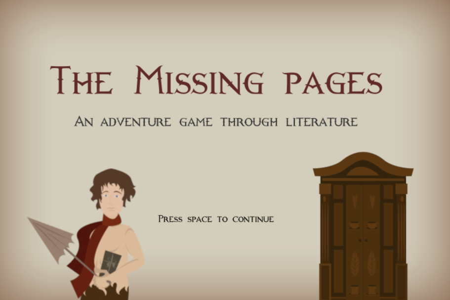
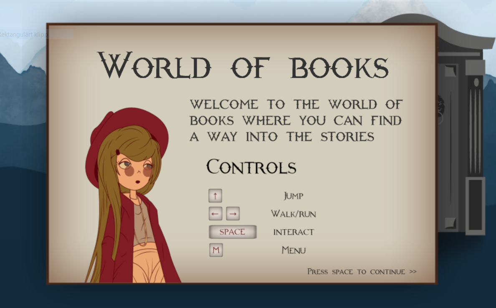
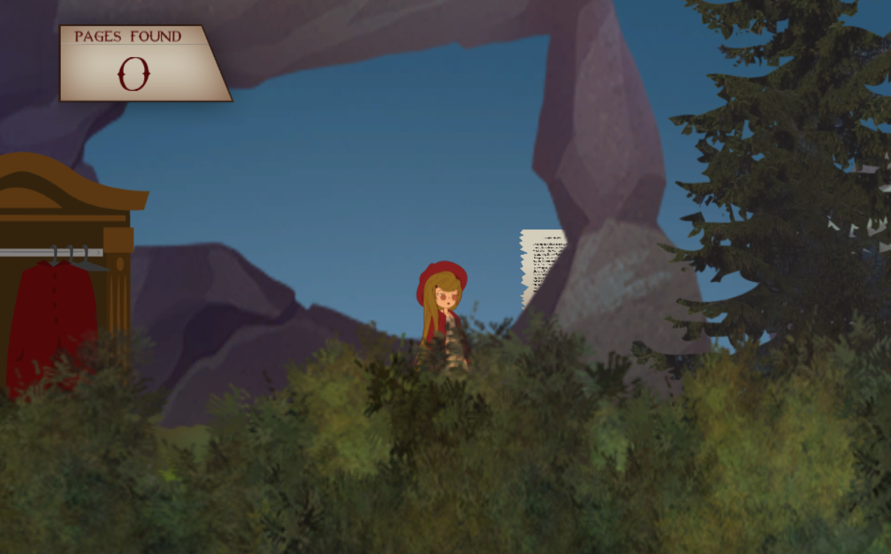
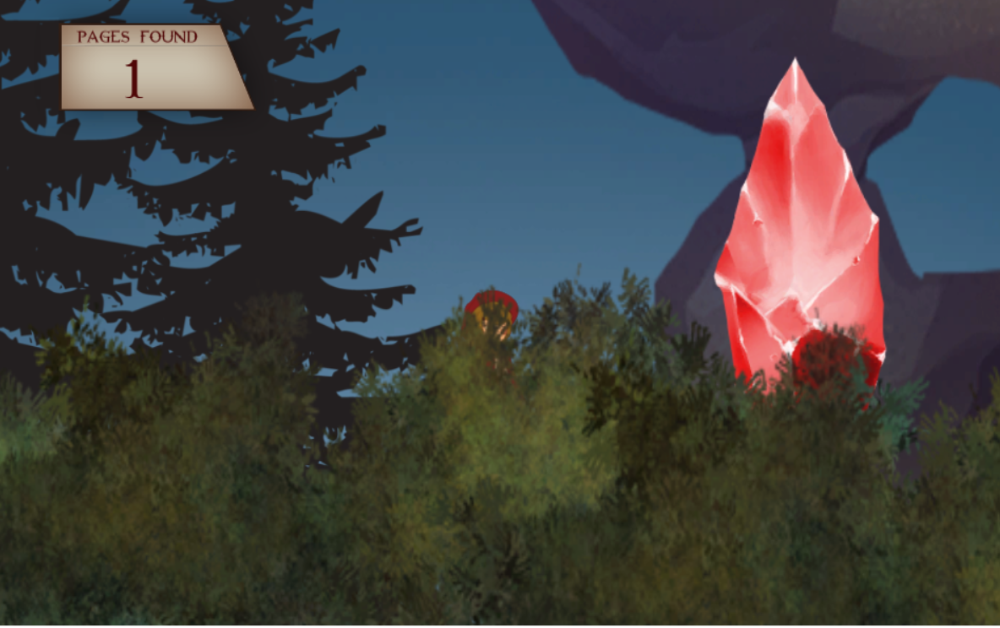
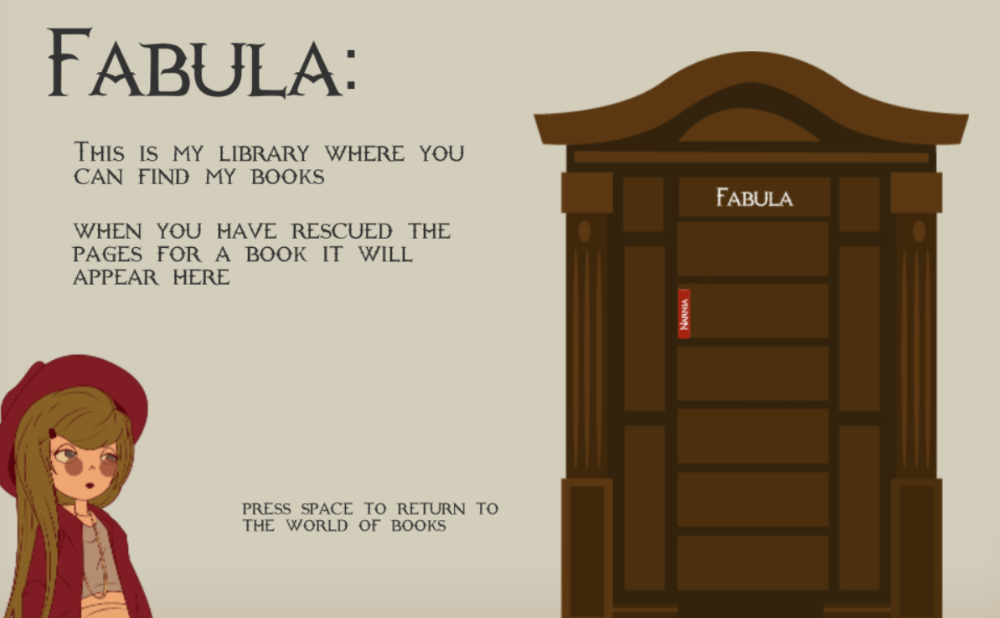

Summary
This game was created during the Skyfox Game Jam in Norrköping 2019. Me and my friend Embla decided to create a 2D explorer game where the main character explores the world of books.
The plot is around the girl Fabula who lives in the world of books. She has a library and someone has broken in and stolen pages from different books. The players mission is to restore the library by travelling through doors that leads to fairytales and find the missing pages. Once a level is completed, that book is shown in Fabulas library.
The game was created using Unity and Embla was responsible for the graphics and I did the game design and coding.
Technical Walkthrough
We started out with brainstorming and deciding what we wanted to do during the game jam. One of the themes suggested was 'Little Worlds' and from this we got inspiration to use our favorite books for the game. We wanted a "base" environment from where the player can reach different levels and we decided to make the first level Narnia and that got us into using waredrobes as portals to the different worlds.
The game starts out with a background explanation of the main character Fabula. For this section I coded a dialogue manager that handles the conversations. This script uses a queue of strings where the sentences is enqueued. Then each character in the sentences is dequeued with a small delay and this results in the slow appearance of the words.
The main character has a player controller script where I used a rigid body to control her motions. Horizontal and vertical movement is performed by adding vectors to the velocity. The character can also jump after firstly checking if the character is grounded or not. In this script I also handle the animations as well as finding the position of different game objects (done by searching for the correct tag) to enable the player to interact with characters and travel into different levels.
In the Narnia level, the player needs to find three lost pages. The pages have a script attached which makes the count in the top corner add a point for each collected page. In this level the plot states that the Ice Queen has placed out traps that the player needs to conquer. This is enemy objects that falls from the sky and if the player is hit, the player returns to the main level. The enemy objects is spawned at different heights and places with randomly selected vertical velocity (within a boundary).
When the level is completed the player returns to the main level again. If all the three missing pages has been collected then this level is saved as completed in a global variable and the book that represents this level appears in Fabulas library.
During the Game Jam we only managed to complete one level but the portals to two others is in the game and it can easily be expanded When we got some time to spare. A fun weekend and we are proud of the work we accomplished during two days.